MASON INVITE STAFF AND SUPERVISORS - 2025 Archive
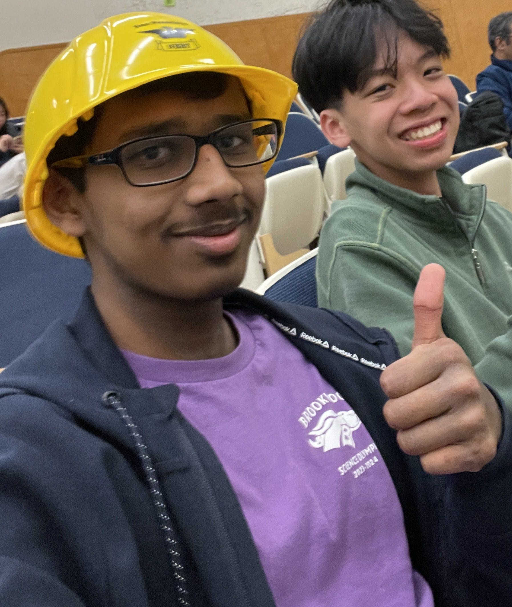
ABRAR ERATTUPARAMBIL
Division B/C Circuit Lab
Hey y'all! I'm a former Brookwood Scioiy member (shout out GA peeps!) and a current GTScioly member. My favorite events are Electric Vehicle, Circuit Lab, and ofc Matsci!
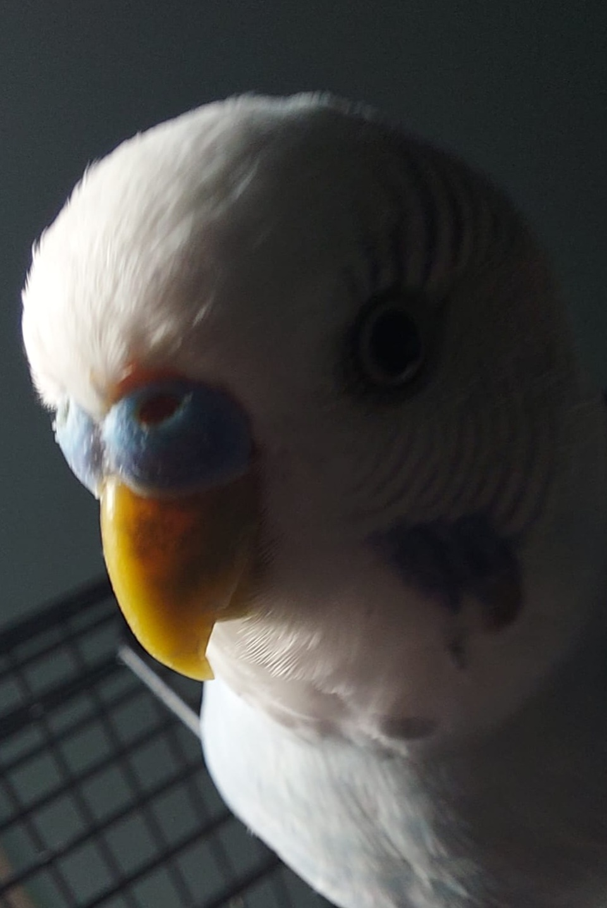
AISHWARYA SAKTHI
Division B Solar System
Hi, I’m Aishwarya Sakthi, a student who’s passionate about astronomy and ornithology!
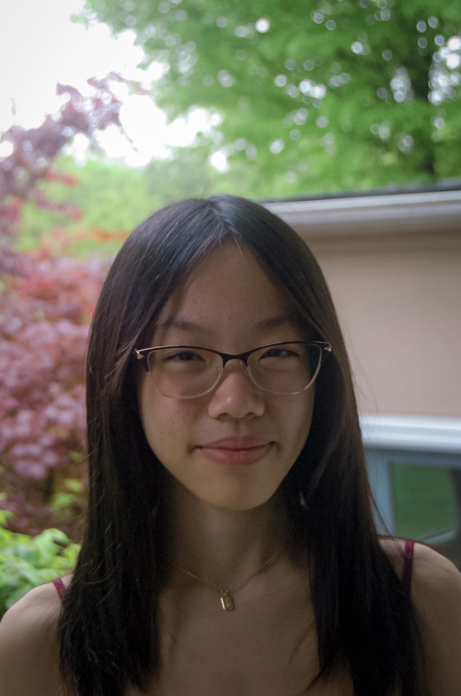
ALICE CHI
Division B Hovercraft, Write It Do It
Hiya! I’m Alice. I am currently a junior at Mason HS, and one of the Mason Science Olympiad captains. I won Write it Do it in 2024 and Air trajectory in 2025. Despite that, my favorite event is flight!
ALICE LUO
Division B/C Remote Sensing
Alice Luo is a junior at William Mason High School, and this is her fifth year competing for Mason's Science Olympiad team. Her favorite events are Disease Detectives, Forestry, and Rocks and Minerals. Outside of Science Olympiad she enjoys reading, writing, and running.
AMRUTHA KARA
Division B Anatomy & Physiology
Hey! My name is Amrutha, and I'm a junior at Enloe High School. Science Olympiad has been a huge part of my life since 7th grade, and I primarily compete in life science and chemistry events. My favorite event, of all time, is Anatomy & Physiology, and I'm SUPER excited about the body systems for this year. Outside of SciOly, since I've recently developed an unhealthy matcha and Celsius addiction, you can probably find me drinking one or the other or at a debate competition.
ANANDAVEL SAKTHI
Division B Potions & Poisons, Divison B/C Remote Sensing
Hi, I'm Anandavel Sakthi and I'm a junior(and captain) at IA East! This is my 6th year competing and my 3th year writing, though my tests are still diabolical. My favorite events are Sounds of Music, Codebusters, and Remote Sensing. Outside of SciOly you can find me speaking to the trees(or getting my knees broken by the lorax), devouring some noodles and co, or playing music. May the odds be ever in your favor and I hope you enjoy Mason!
ANEESH IYER
Division B/C Codebusters
Hi! I am a former captain of the Mason Science Olympiad team and graduated from Mason in 2025. I was the Director of this tournament last year, and most of the events that I did involved physics and inquiry (with Codebusters being my favorite and Optics as second).
ANGELA TANG
Division C Rocks & Minerals
Angela does earth science events such as Rocks and Minerals, Astronomy, and Dynamic Planet. She can't eat hot cheetos but is working to build her spice tolerance. She enjoys playing violin and touching rocks.
ANKUR KAPILESHWAR
Division B/C Hovercraft
I am a Senior at Carmel High School and an officer of the SciOly team. I enjoy the build events the most, although I love all aspects of science! Outside of SciOly, I like to rock climb and build stuff.
ANNIE LI
Division C Chemistry Lab, Forensics
Hey there, I'm Annie! I'm a senior at Mason supervising Chemistry Lab and Forensics, and I have been competing in Science Olympiad since 7th grade. As one of Mason's captains this year, I'm super excited to help run Mason Invite! My favorite events are Forensics and Chem Lab (duh). In my free time, I like watching TV. A current favorite is The Day of the Jackal!
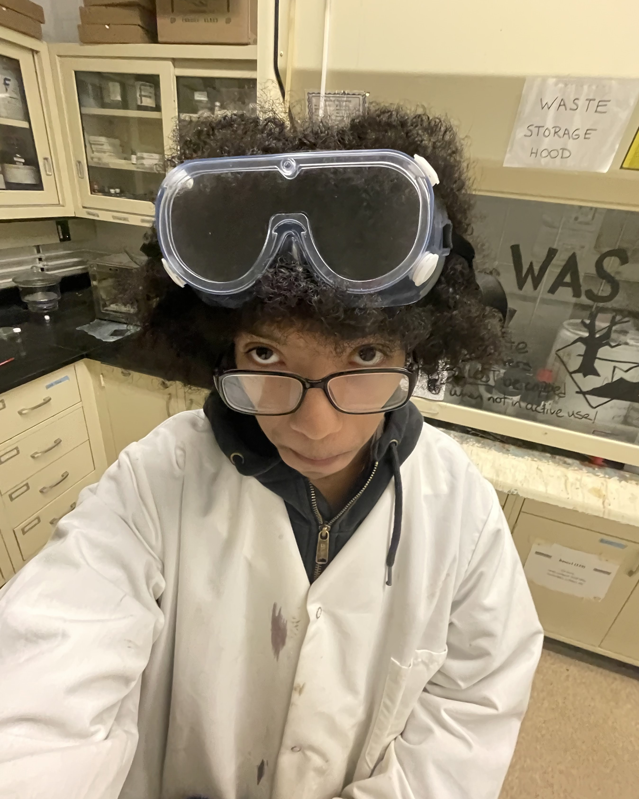
ANTHONY EGAN
Division C Designer Genes
Hi! I’m a freshman at Cornell University doing a double major in computational biology and biostatistics with three minors in computer science, infectious disease, and applied economics. My favorite scioly events were envirochem and anatomy and I helped write chem lab last year (sorry)
ARJUN PATEL
Division B Heredity
Hi, I’m Arjun! I’m currently a senior at Marquette University High School, and this is my fourth year competing in Science Olympiad. I am absolutely obsessed with biology, and my favorite events are Anat & Phys, Microbe Mission, Designer Genes, Disease Detectives, and Dynamic Planet. When I’m not studying for my events (so……never?), I enjoy playing tennis, traveling with my family, and trying new foods.
ARTHUR ARMAING
Division B Codebusters, Division C Robot Tour
Hi! I'm Arthur Armaing, a recent graduate of Harriton High School and now a computer science student at Georgia Tech. I love robots, puzzles, computers, chess, and, most of all, I love science olympiad. I've also got a passion for physics, even though I'll never come to peace with that last laser shoot, haha. A fun fact about me is that my favorite thing to do in the summer is to sail off the coast of France!
AVA LIAO
Division B Mission Possible
Hi! I'm Ava, a senior at Carmel High School and this is my 4th year competing in SciOly. My favorite event is Disease Detectives. When I'm not detecting disease, I enjoy crocheting tiny creatures and lying on the floor.
CATHERINE JI
Division C Bungee Drop Designer Genes
Hi! I’m Catherine, a senior cohead of New Trier SciOly. My favorite event is Codebusters, but I’m super excited to ES Bungee Drop and Designer Genes :) Outside of SciOly, I’m part of Student Council and play the viola!
CHLOE ZHANG
Division C Materials Science
Hi, my name is Chloe Zhang and I'm a Junior at Mason Highschool! Other than Scioly, I enjoy shopping, reading, and working out!
CLAIRE HUANG
Division B Heredity
Hey I'm Claire, I'm currently a junior at Solon High School. I love love love bio events and codebusters because they're all really fun to do in general. And I'm excited to write the heredity test for y'all!
CODY CAI
Division B/C Machines
Hi, I'm Cody and I'm currently a senior competing for Stuyvesant High School. I've been doing SciOly for 5 years now, primarily competing in physics events. I hope you all have fun with our test :)
CODY TANG
Division B/C Machines
Hi, my name is Cody Tang, I'm currently a junior at Mason High School. This is my 5th year of Science Olympiad and my favorite event is Experimental Design. I love math and physics and I'm excited to be writing again.
COLIN HU
Division C Boomilever, K-pop Trivia
yo(gurt), my name is Colin Hu and I'm a freshman at Georgia Tech studying electrical engineering and I lowk don't like SciOly because I have gray hair now. anyways I like all build events (except for heli) and I also like lalisa. and chaewon. throw in minjeong, hanni and danielle. plz sub to my YT channel too (@colinhu0526) so i can pay for my college tuition, thanks. nah but in all seriousness, shoutout yuhan gubert for being the goat yurrrrr
DANIEL CHEN
Division B/C Entomology
Hey everyone, I'm Daniel, a freshman studying Biochemistry at Stony Brook University, and this is my first competition supervising for Entomology! I did SciOly for my entire 4 years of high school and my favorite events are Disease Detectives, Experimental Design, and of course, Entomology. For fun, I practice Flow Arts and grind Pokemon Showdown in my downtime.
EMIR NADUVIL
Division B/C Codebusters, Division C Machines
Hey y'all, I'm Emir! I'm a five-time national competitor of Solon, and I just entered my freshman year at Carnegie Mellon studying math and CS! I competed in a lot of events throughout SO, mostly physics inquiry and Disease Detectives, for whatever reason. Outside Scioly, I'm a huge Cleveland sports enthusiast, love to play games of ultimate frisbee and football with friends, and I'm an avid collector of football cards, stickers, pins, and more. I'm thrilled to return to the Mason Invitational as a supervisor for a second year, and I hope y'all enjoy!
ETHAN CHEN
Division C Astronomy, Experimental Design
Hello, my name is Ethan! I am a freshman at the University of Michigan studying Aerospace Engineering, with a minor in Astrophysics. During my time in SciOly for 4 years, my main event was Astronomy C, and this will be the first time I have ES’d for MasonSO. In my free time, I enjoy biking, playing the piano, and playing ping-pong with my friends.
GIO NICOLAI
Division B/C Rocks & Minerals
Hi, I'm Gio! Although my favorite subjects are biology and chemistry, Science Olympiad has fully sucked me into the ID event rabbit hole! My favorite things outside of SciOly are playing D&D and nonfiction biology books! I'm super excited to work for Mason!
JAYIN SEHGAL
Division C Entomology
Hi, I'm Jayin and I'm a dude overly obsessed with bugs! In my free time I enjoy chess and screwing around with my aquariums.
JEREMY LEE
Division B Metric Mastery
Heyo, my names Jeremy and I'm a sophomore at Orange County School of the Arts. I was the captain of the Div B team for two years and I mainly do inquiry or physics events. Aside from SciOly, I play piano and cello, compose music, and penguins are my favorite animal! I hate metric mastery btw worst event to exist ever…
JERRY HUANG
Division B/C Minecraft Mission
Hi! I'm a sophomore at Garnet Valley High School and this is my 4th year doing Science Olympiad. I've been an avid Minecraft player ever since the pandemic. I hope y'all enjoy the test! (Image credits to Rooni)
KACI MORRIS
Division C Entomology
Hey all! I'm Kaci, a freshman at Stanford University and previous competitor at New Trier High School. I loved Science Olympiad and am excited to volunteer in college!
KAEDEN LEE
Division B/C Disease Detectives
Hey! I'm Kaedan and I'm a senior at Iolani. This is my 6th and final year competing in Science Olympiad and I’m glad to be running Disease Detectives (my favorite event) for this tournament! Hopefully the test isn’t too hard and you all enjoy it! Good luck and have fun!
KATELYN TRAN
Division B Write It Do It
Hello! My name is Katelyn, and I’m from SoCal! This is my fourth year doing Science Olympiad; some of my favorite events are Forensics, Chemistry Lab, and Write It/Do It!
KEISUKE KWONG
Division B Boomilever
• Greetings. • My name is Keisuke Kwong. • I've participated in Science Olympiad for four years. • I graduated from 'Iolani School in 2025. • It's a great school. • Currently, I am studying MechE at Cornell University. • Cornell is also a great school. • In particular, the food here is wonderful. • Towers was a great event. • I'm hopeful for Boomilever. • However, Codebusters remains unbeatable. • That being said, I'll be supervising Boomilever B. • Have a nice day.
LIHENG WANG
Division B Metric Mastery, Division C Boomilever
Hi! My name is Liheng, and I am a sophomore at Mason High School. I was the silver medalist in Tower C last year and I like science, playing clarinet, and running. Something I enjoy is being with my friends.
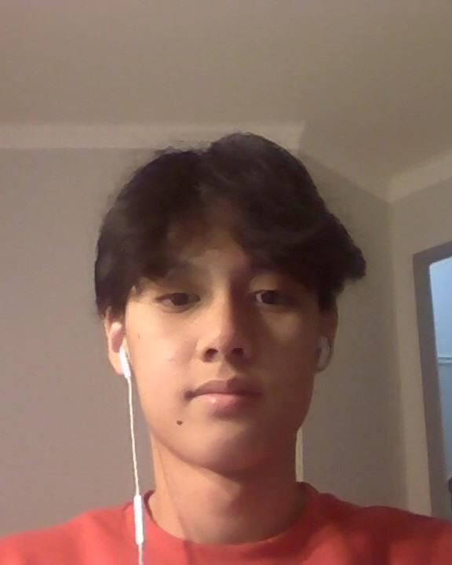
JAYDEN LU
Division B Codebusters
My name is Jayden Lu, a senior at Mason High School. This year is going to be my second full year of doing Science Olympiad.
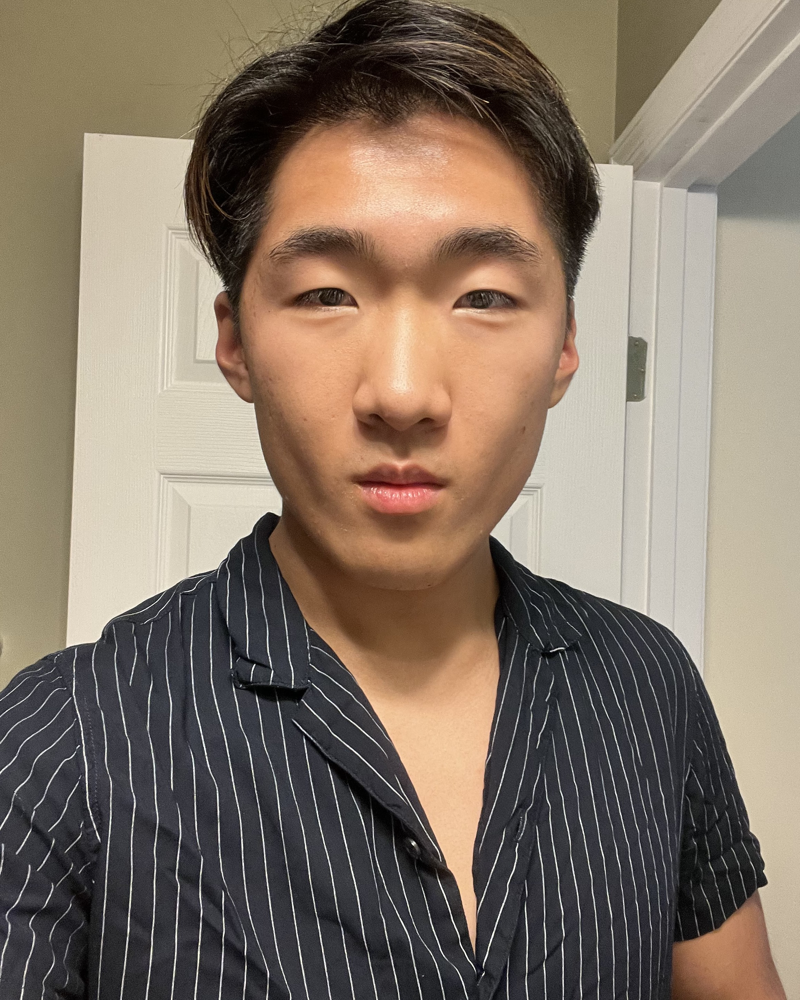
LUKE LU
Division C Anatomy and Physiology
182cm/78kg
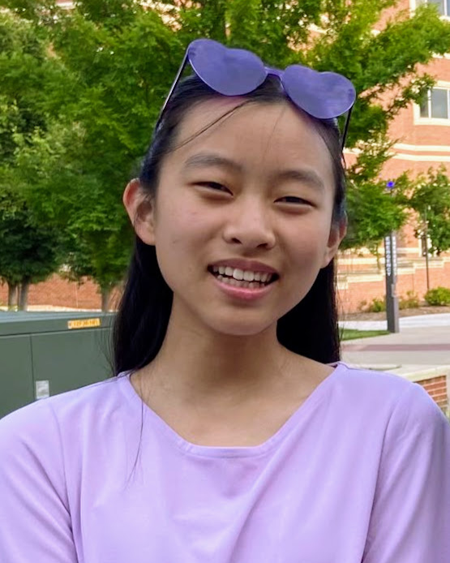
ALICE LUO
Division C Geologic Mapping & Division B/C K-Pop Trivia
Hi, I'm Alice! I'm a sophomore at Mason High School and this is my 4th year of Science Olympiad (started in middle school!). I love creative writing and listening to music. My favorite Science Olympiad events are Forestry (ripe in peas), Disease Detectives, and Geologic Mapping (but only half the time).
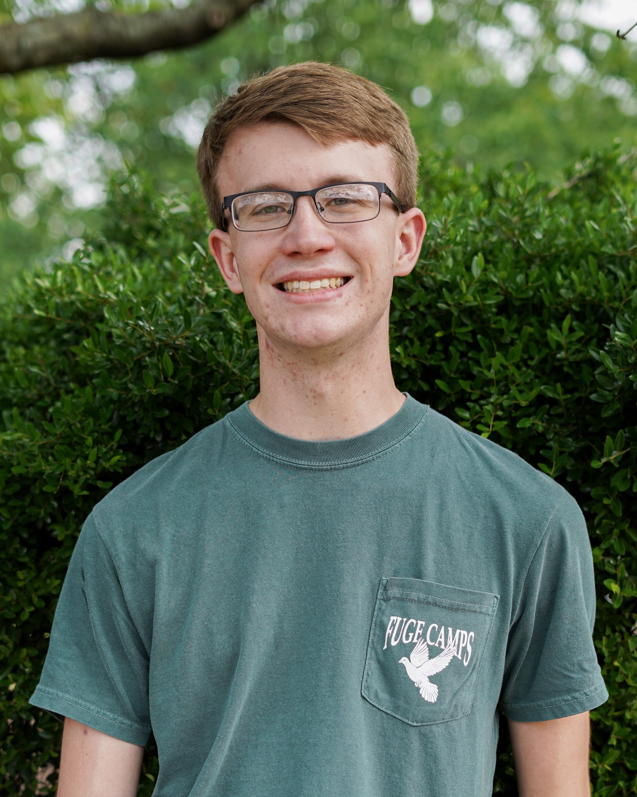
COLLIN MCCORD
Division C Bungee Drop
I'm a Mechanical Engineering student at Missouri S&T, and the founder and president of the S&T Science Olympiad Society, our Alumni Network chapter. I love build events (my favorite is Machines), and competed with Kickapoo High School in Missouri.
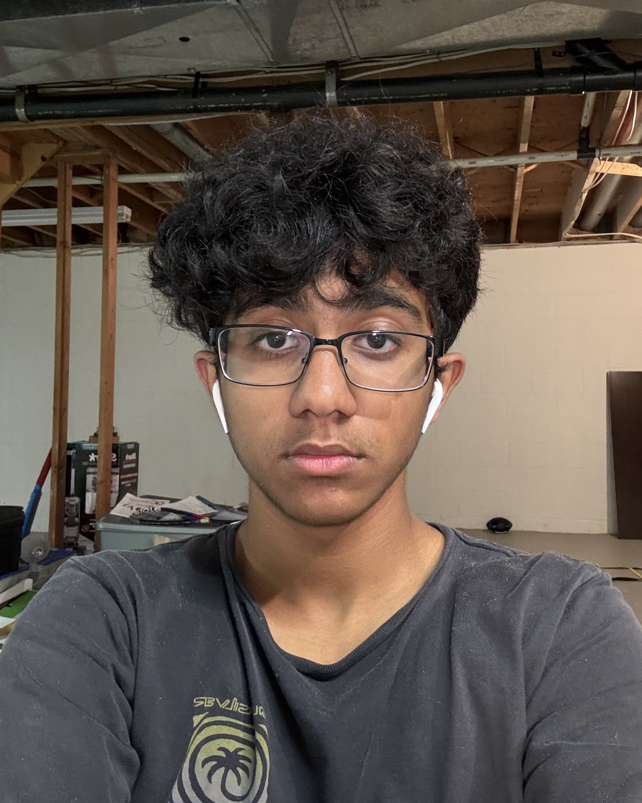
PARTH MHASKE
Division B Helicopter
Parth is a current senior at West Windsor-Plainsboro High School North. At WWPN, he does the build events, though he is partial to balsa builds and robot tour. His favorite event of all time is flight, and when he's not chronically online, he usually likes to go for a bike ride.
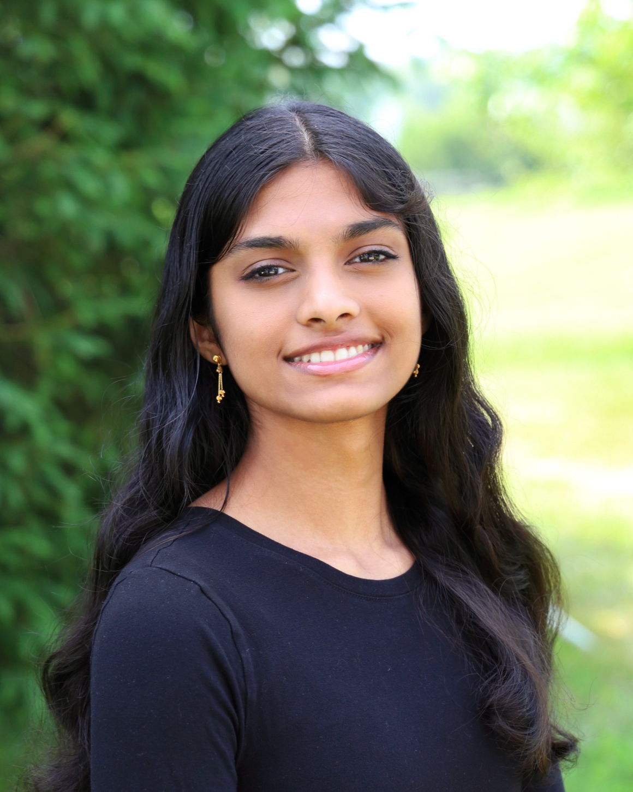
NAFLAH MOHAMMED
Division C Disease Detectives
Hi, my name’s Naflah! I’m a first-year student at Duke University, majoring in Biology and Environmental Science. With a passion for scientific exploration and engagement, I’ve been involved with clubs like Science Olympiad and organizations like the Stony Kill Farm and Cary Institute since high school. Currently, I’m working with the Duke Gardens part of their Equity Through Stories program, encouraging visitors to connect with nature through social and cultural contexts. Beyond STEM, I love reading, traveling, and experimenting with art. I’m an ES for Disease Detectives C, and so excited to be a part of the Mason Invite this year!
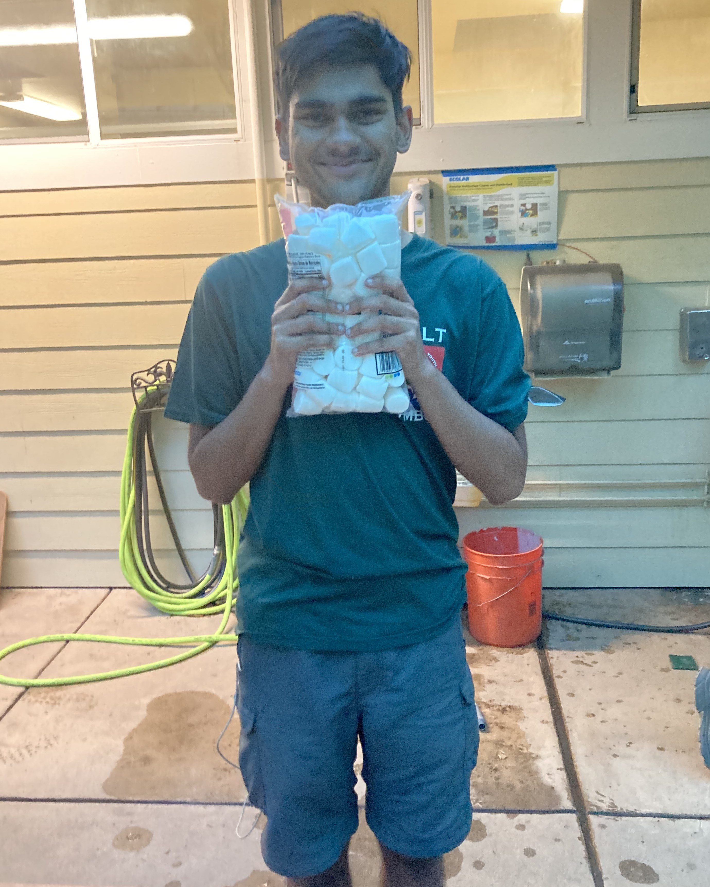
SUKHAD MUTATKAR
Division C Chemistry Lab
I am a Chemical Engineering and Material Science and Engineering major at UC Berkeley! I love exploring the outdoors, hanging out with my friends, and eating food at absurd times, as well as playing video games and sleeping when I can. My favorite events were Chem Lab, Tower and Fermi Questions as a highschooler!
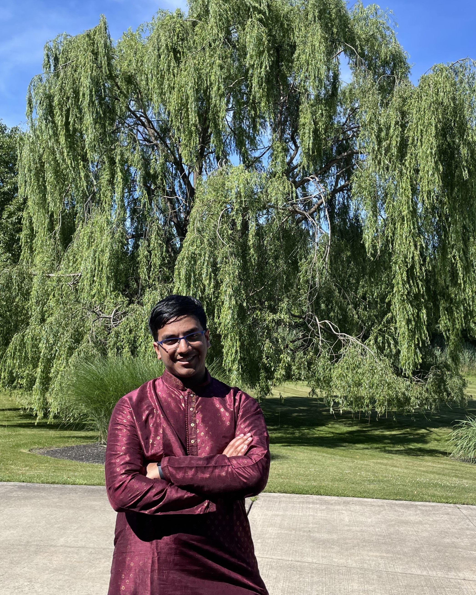
EMIR NADUVIL
Division B Optics
Hey all! I'm Emir Naduvil, a 4x Solon Science Olympiad National competitor going into my 5th year of SciOly. I do physics and inquiry events like Codebusters and Optics, but also stuff like Disease Detectives as well. Outside of Scioly, I'm a fervent Cleveland sports fan (Who dey? I've never heard of them.), an invested OverSimplified subscriber, and an avid sticker and pin collector.
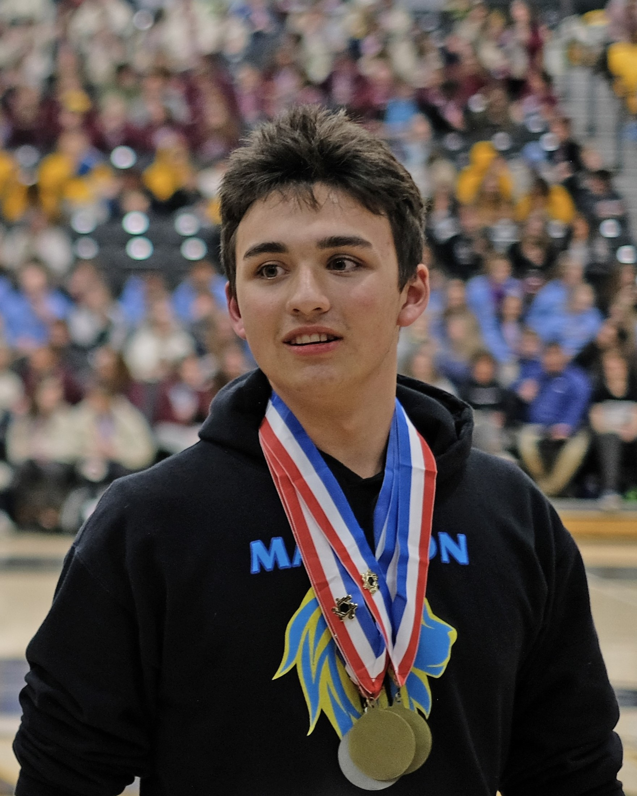
WILLIAM NOGUERA
Division C Fossils
My name is William Noguera, and I am a sophomore at UW-Madison. I was a two-year captain at Madison West High School, where I competed in Rocks/Fossils and Codebusters, among other events. I now help run the Badger Invitational and write tests for many competitions around the Midwest!
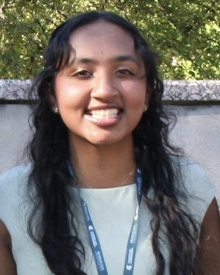
SHRIYA PARTHASARATHI
Division C Microbe Mission
Hello! My name is Shriya, and I'm a freshman at UNC Chapel Hill. I competed as part of Mason's SciOly team for 4 years, and was a captain during the 23-24 season. Some of my favorite events include Codebusters, Forensics, and Microbe Mission, so I'm excited to supervise MM at the invite. In my free time, I love to sing, addictively drink coffee, and binge K-dramas -- I love K-dramas so much that I'm currently studying abroad at Korea University in Seoul. I'm excited to show my love for this invite, and I hope y'all enjoy taking Microbe Mission :)
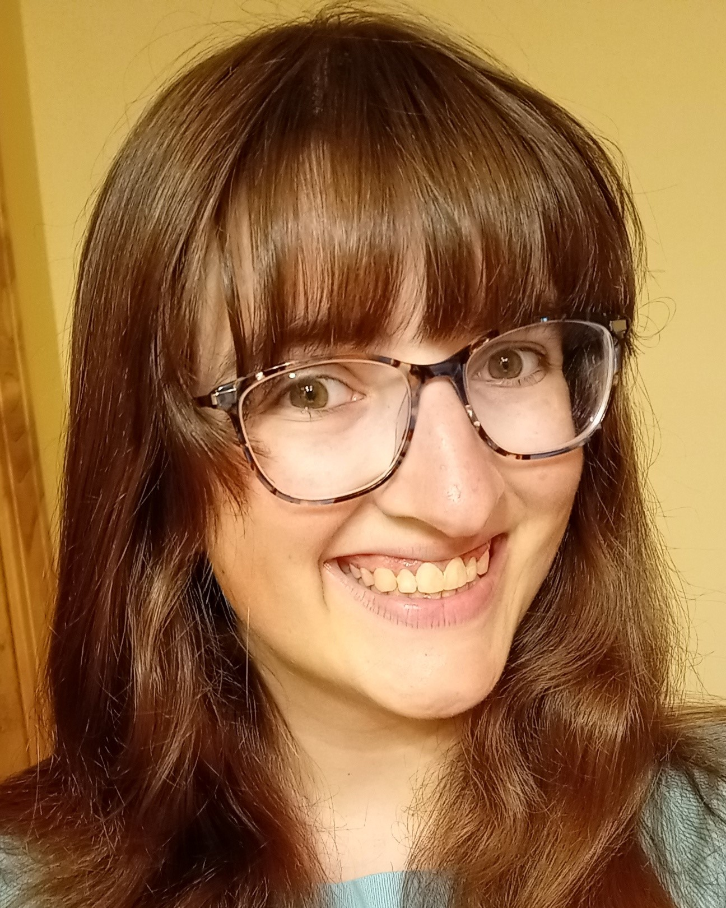
ALLISON PETERSON
Division C Ecology
I'm a senior at Purdue majoring in Biology, Science Education, and Prelaw with minors in Chemistry and Wildlife! I love to run, draw, and write prose alongside Science Olympiad exams. Upon graduation this spring, I hope to teach and go to law school. I competed with Lake Central's team in high school, and Astronomy, Herpetology, Ornithology, and Ecology are my all-time favorite events! Have fun at Mason, and enjoy the competition experience - there's nothing like it!
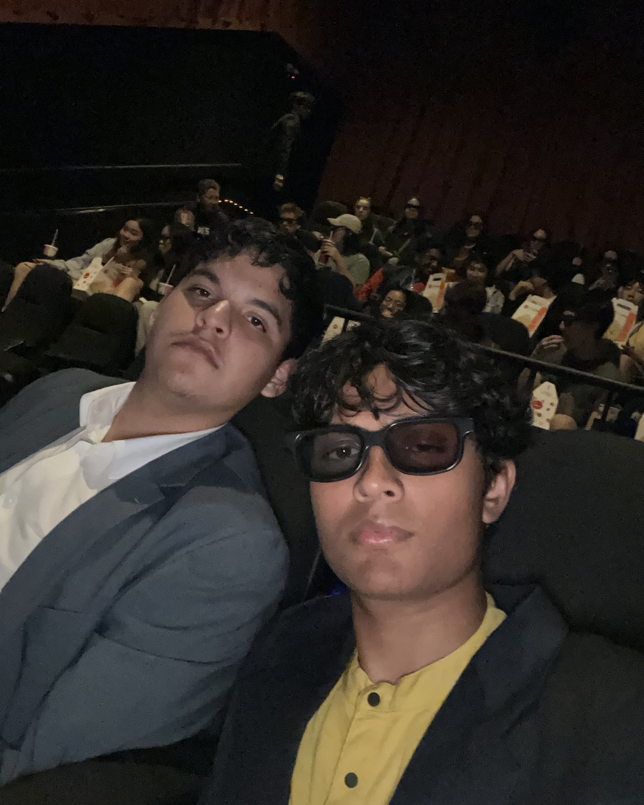
SOURISH PRAMANIK
Division C Material Science & Division C Optics
Hi! I'm Sourish, and I'm a senior at Montgomery High School. I really like physics, and love physics and build based events! I also have a cool YouTube channel where I explain physics stuff to other people.
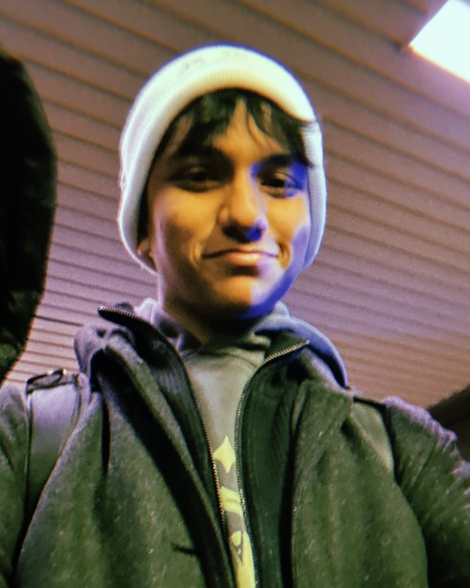
REVANTH REPARLA
Division B Road Scholar
Hi! My name is Revanth, and I’m a sophomore at Jordan High School. My favorite SciOly events are Rocks and Minerals and Experimental Design. In my free time, I like playing Mario Kart Wii.
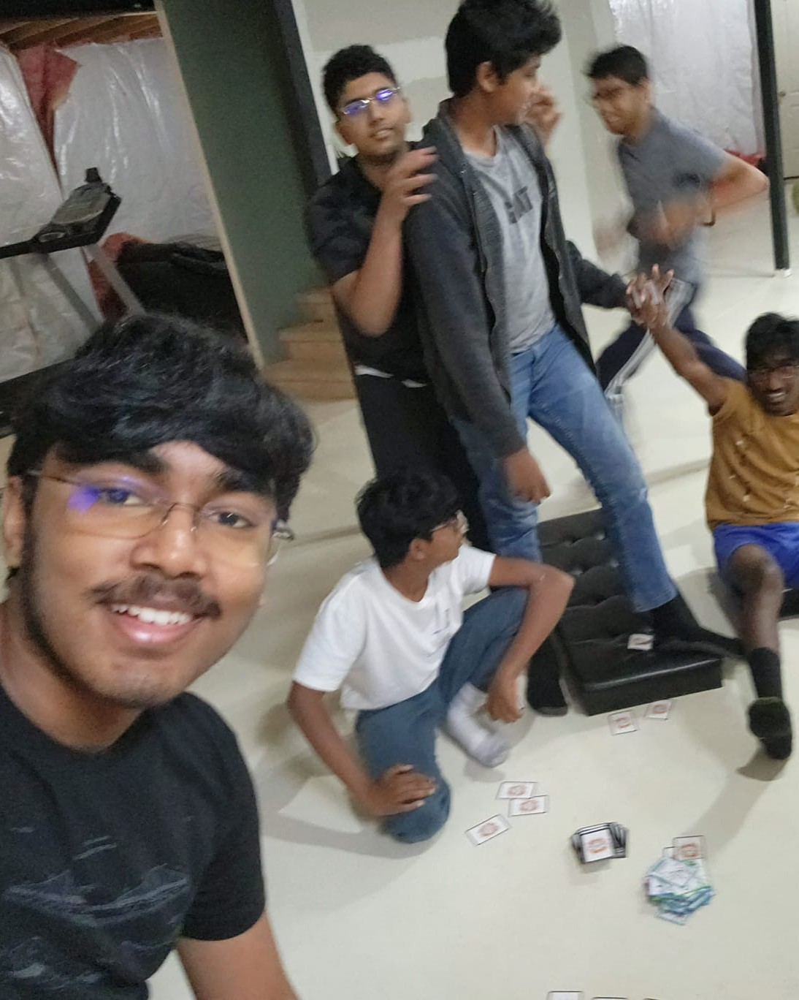
ANANDAVEL SAKTHI
Division B Potions and Poisons
Hi I'm Anand, I'm a sophomore at IA East, I only do physics & chem events for some reason and my fav event is IAT. I love music and love playing string instruments, and at this point I have so many music extracurriculars that UMich is going to just tell me to take Music Theory instead of Aerospace Engineering as my career.
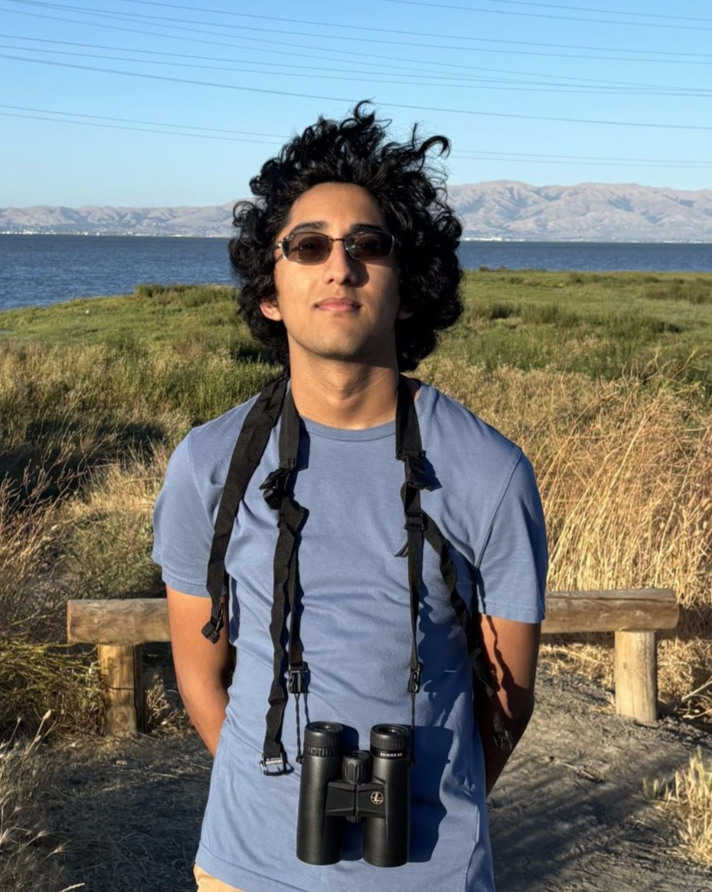
KRISH SHAH
Division B Ecology
Hello! My name is Krish, and I'm a senior at Seven Lakes High School. As a part of our Science Olympiad team, I love doing identification and biology related events, but I also usually end up doing random events like WIDI. Outside of Science Olympiad, I'm a LaTeX enthusiast, hobbyist web developer, and amateur birdwatcher. I hope you enjoy our test!
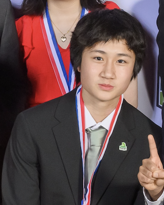
IAN SHANG
Division C Astronomy & Division B/C Supercell Showdown
My name is Ian Shang. I am a junior at Mason High School, and have participated in Science Olympiad for 2 years. I do Astronomy, Chemistry Lab, and Disease Detectives, with Chemistry Lab being my favorite. I love science-related events.
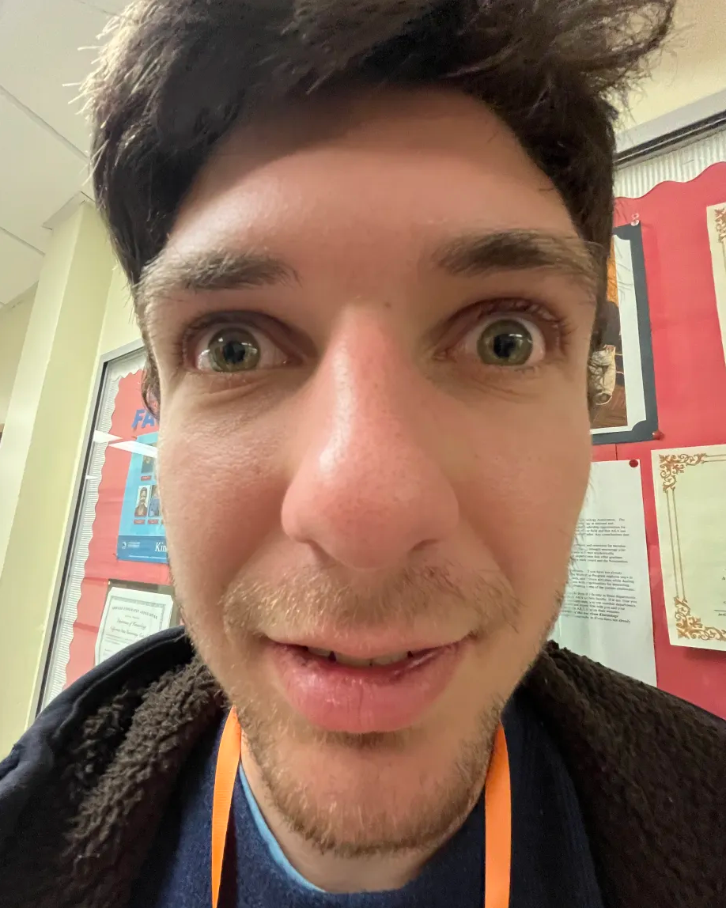
NIR SHATSKY
Division C Wind Power
Junior at UCI (meche major). I spend more time playing pool than studying/doing homework.
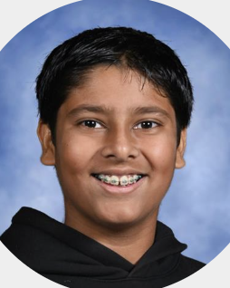
DARSH SINGHVI
Division B Air Trajectory
I’m an enthusiastic, entrepreneurial, and dedicated high school student preparing for college studies in business. I’m looking to expand my skill set, gain experience, and contribute to my community. I’m passionate about learning, experimenting, and working with numbers.
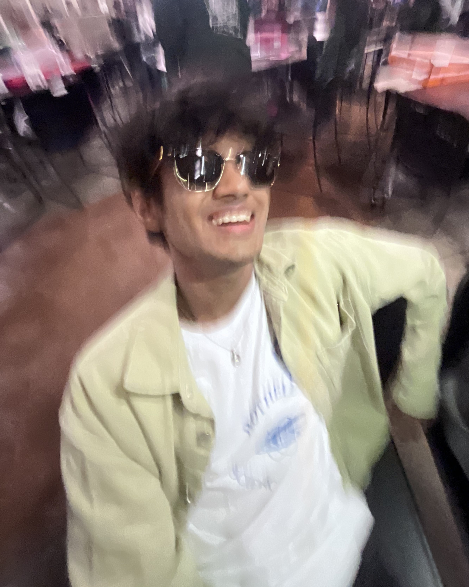
APURV SRIRANGAPATNAM
Division B Crime Busters
Hey, my name is Apurv, and I’m a senior at Bothell High School. When I’m not doing Codebusters or Forensics for SciOly, I’m usually trying to finish something I procrastinated on for too long (including this description). I love making TV show references whenever I can and they’ll probably work their way into your test somehow. If I find free time I usually like to relax by reading or calling my friends just to say I’m bored. I hope you enjoy my test!
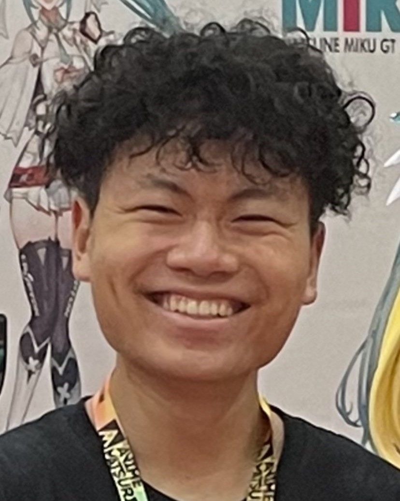
ALAN TANG
Division C Codebusters
Hi, I'm Alan Tang. I only competed in the 2023 seaso,n in which I proudly became the Texas State Champion and National Runner-up for Codebusters. I also competed in Chemistry Lab and Environmental Chemistry, both of which traumatized me, and I have not studied Chemistry since then. I am also the 2023 Seven Lakes Invitational Pokemon Trivia champion :D. Despite being from Clements High School, I am proudly Mason's number one fan and excited to write for the invitational!
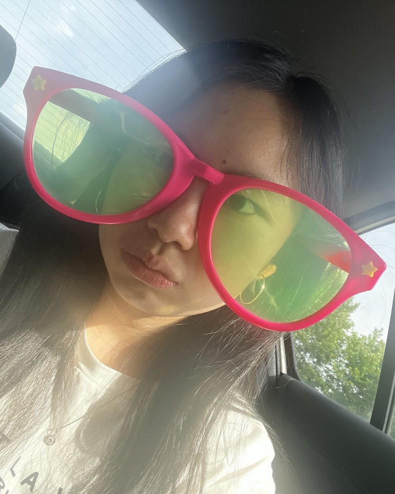
ANGELA TANG
Division C Geologic Mapping
Angela is a sophomore at Mason High School. She enjoys earth/space science and mostly participates in events related to that field in Science Olympiad. Some events she competes in include Geologic Mapping, Dynamic Planet, Fossils, and Astronomy. Aside from science, Angela enjoys playing the violin, creative writing, and photography.
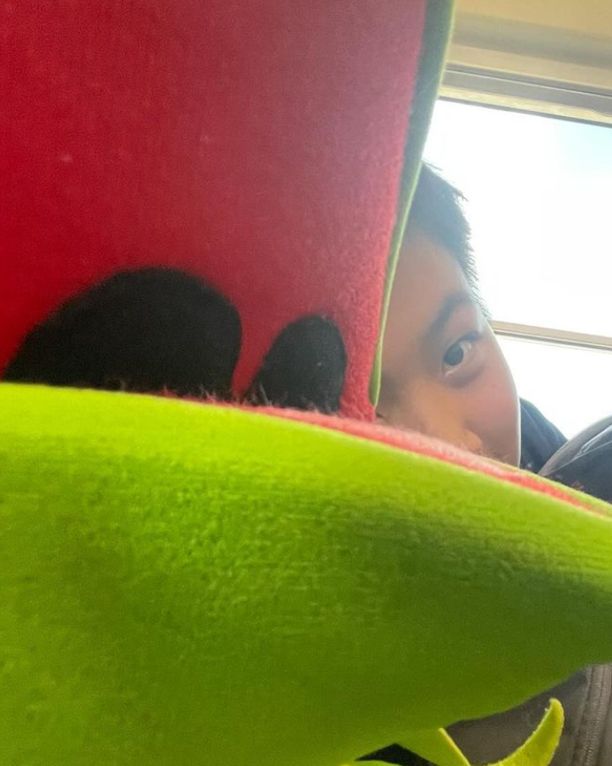
CODY TANG
Division C Air Trajectory & Division B Write It Do It
Mason High School sophomore
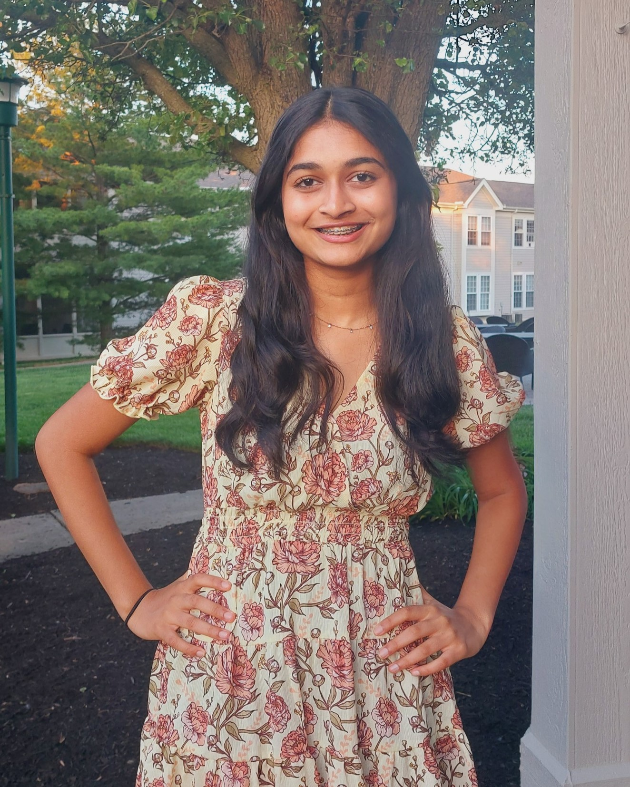
VISHISTA VULPALA
Division B Dynamic Planet
Hi, everyone! My name is Vishista Vulpala, and I am a junior at Mason High School who will be writing and supervising for Division B Dynamic Planet at Mason Invite! I’ve been doing SciOly for 4 years now and I compete in Dynamic Planet, Geologic Mapping, and Forensics!
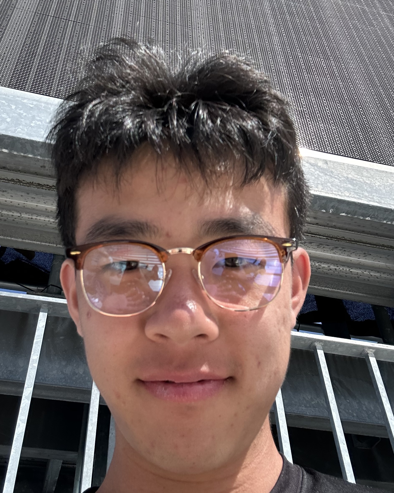
PETER WANG
Division C Air Trajectory
Hello! My name is Peter Wang and I'm currently a freshman at UMich. I was a President of Novi HS SciOly in the 2023-2024 season and led the team to its first ever National Tournament qualification! At Nationals, I placed 2nd in Air Trajectory and 5th in Scrambler (though I was merely a fill for the latter). My hobbies include hanging out with friends, playing/watching tennis, and listening to/playing music!
Check out my video from our Air Trajectory run at last year's National Tournament here.
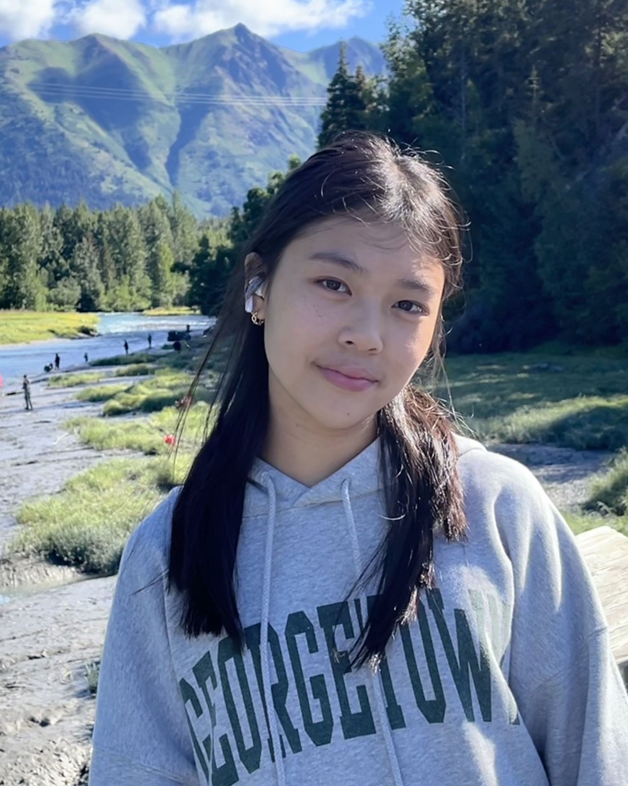
SARAH WANG
Division C Entomology
I’m Sarah Wang, and I’m a sophomore at Mason High School. I like terrestrial biology, and I have a peanut allergy.
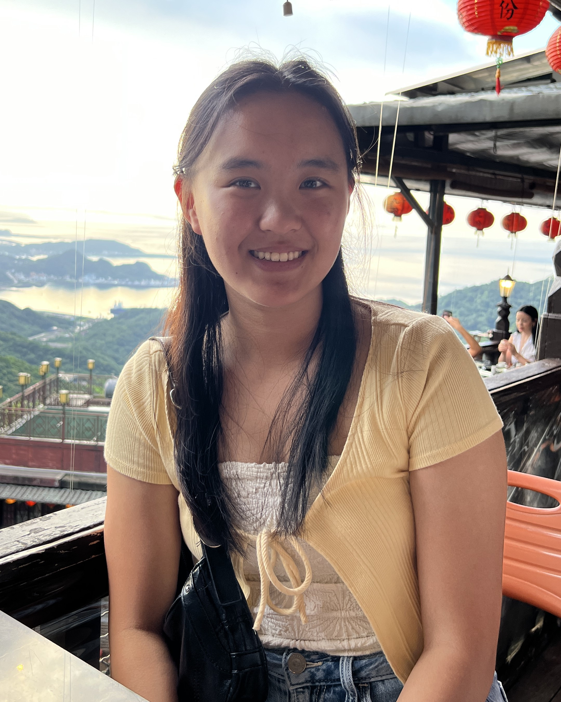
SHIN-YI WANG
Division C Ecology
I am a freshman at Northwestern University majoring in chemical engineering and integrated sciences. I did ScioOly all 4 years of high school, and my favorite event is Forestry!
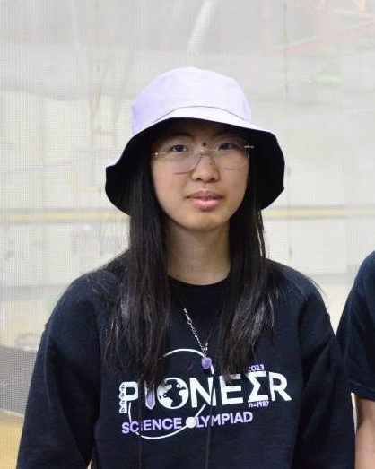
SOPHIA WANG
Division C Helicopter & Division C Robot Tour
I go to UMich and like to build.
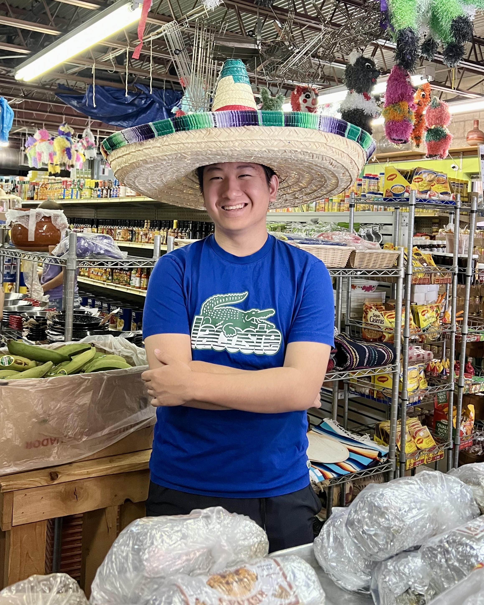
EVAN XIANG
Division B Microbe Mission
Hi, I'm a Junior at Shady Side Academy! I enjoy competing in build events in SciOly while grinding bio. I also compete in several other competitions such as the USABO and USESO. I was a 2024 USABO and USESO Camper. I love building random things. Some of my creations include a posture enforcement system and a textbook page flipper. Outside of science stuff, I enjoy sleeping and listening to my Spotify Daylist.
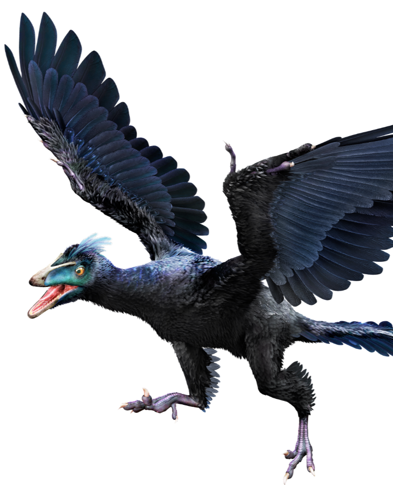
ANDREW XING
Division B Metric Mastery
I am BIRD.
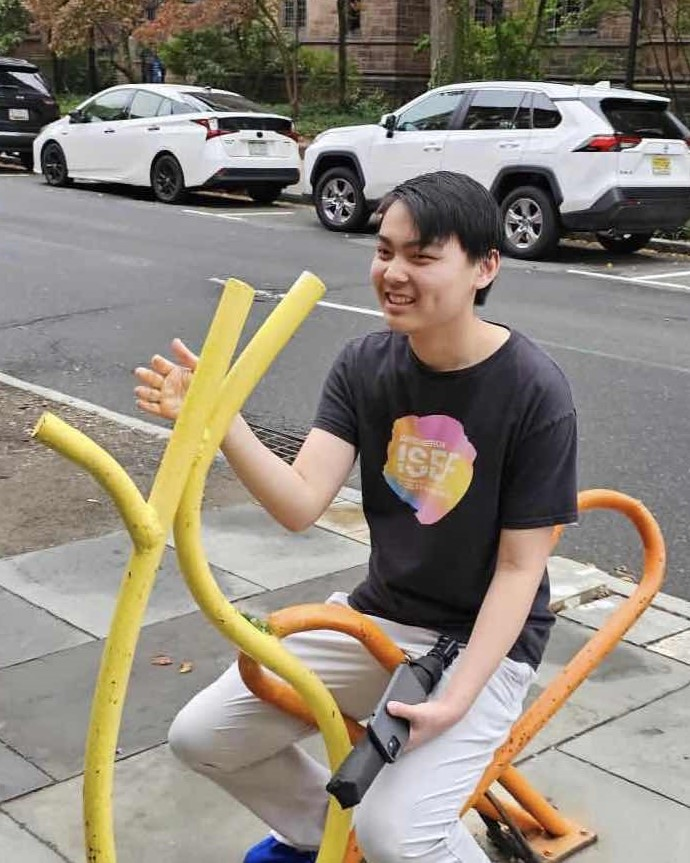
JEFFREY XU
Division C Experimental Design
Hi! I'm Jeffrey, a first-year in the Rutgers University Honors Program planning on majoring in math and economics. During high school, I competed for and captained Montgomery High School, where my main events were Codebusters, Experimental Design, and Fermi Questions. My favorite memories include recording my teammates speed-eating Chipotle, watching our Scrambler "device" at Regionals, and helping secure a historic 4th place team finish at Nationals. Outside of SciOly, I like playing soccer, messing around with friends, and trying way too hard on the daily New York Times games. I'm excited to supervise for the first time at the Mason Invitational!
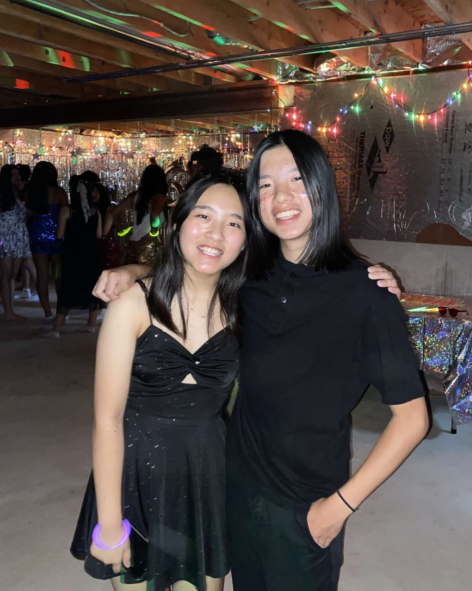
KYLE YAN
Division B Ecology
Hello, my name is Kyle Yan! I am currently a junior in high school, and this is my 3rd year competing in Science Olympiad (DD, Eco). Outside of school, I competitively jump rope, work as a math tutor, and listen to a lot of music (The 1975, Sabrina Carpenter, Taylor Swift, etc.). In the future, I hope to major in data analytics at my dream school, CMU! (I'm on the right of my photo, BTW)
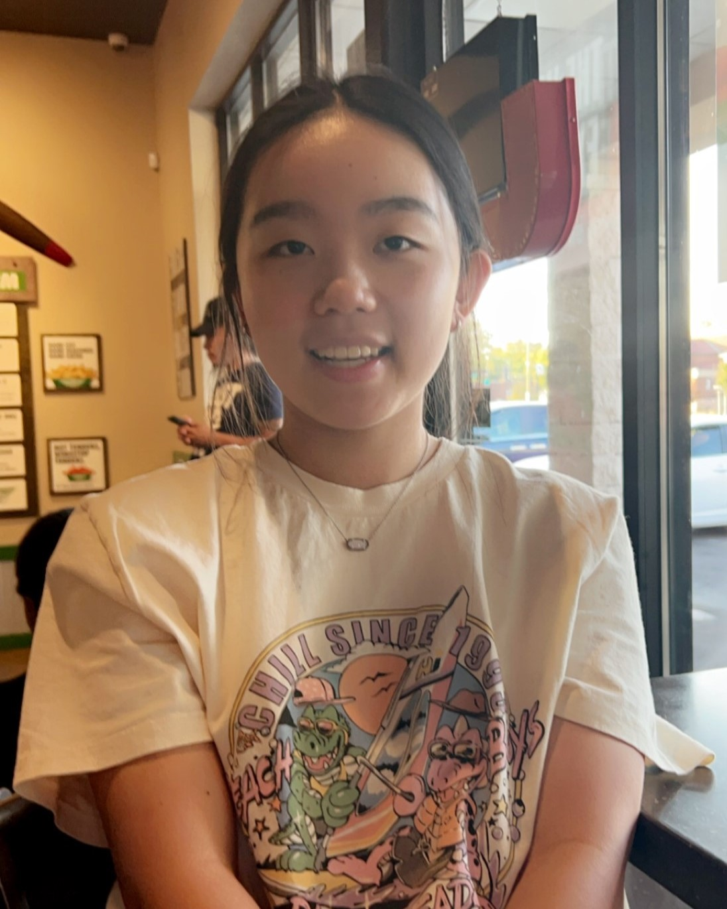
RAINA YANG
Division B Mission Possible
My name is Raina Yang, and I am a sophomore at Mason High School. This is my 4th year of Science Olympiad, and I mainly do builds. In my free time I like to go shopping and hang out with my friends. I also like to bake, but I probably shouldn’t eat that much sugar. I have a little sister and a very cute dog.
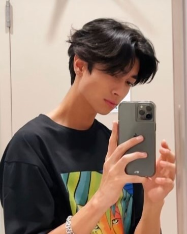
YEMING YOU
Division C Forensics
Yeming You is a senior at Mason High School. He has participated in Science Olympiad for 4 years, and is passionate in code busting and fingerprint identifying. Outside of his flourishing science career, Yeming enjoys playing the violin and Candy Crush Saga. He hopes to pursue a science-oriented career in anesthesiology, and is also a catfish because the image shown next to this bio is not of him.
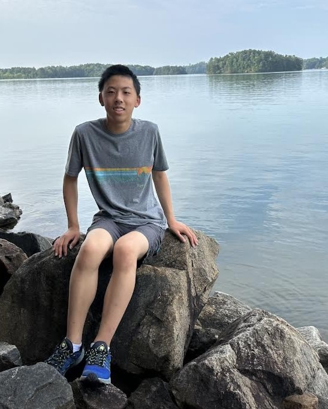
ERIC ZHANG
Division C Disease Detectives
Hi, my name is Eric, a junior at Lexington High School. My hobbies include procrastination… I’ll finish this later. I also like playing Tetris, computer science, reading, and competitive programming.
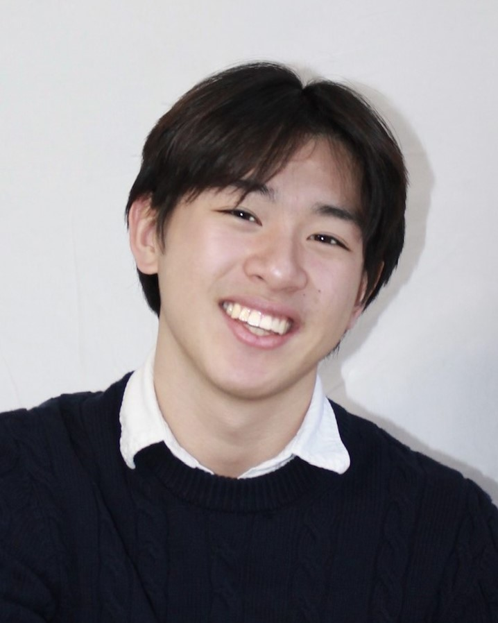
LANCE ZHANG
Division C Fossils
Hello, fellow fossil feins. I am a recent Mason HS graduate, and am currently studying economics at the University of Chicago. I've been in Science Olympiad for 6 years and have competed in a variety of events since, my favorites being Fossils (duh), Forestry, Ecology, Rocks & Minerals, Geologic Mapping, and Dynamic Planet. I placed 3rd at this year’s National Tournament in Fossils, my favorite show growing up was Dinosaur King, and the coolest dinosaur imo is Parasaurolophus so I hopefully have some credibility. If you have any questions or wanna chat about fossils, hit me up at zhanglancell2@gmail.com.
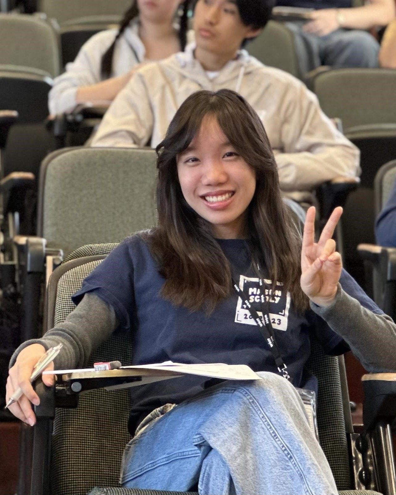
MINGJIA ZHANG
Division B Metric Mastery
Hello folks! I'm a senior at Mason in my fifth year of SciOly, and one of the captains for our team this season. My favorite events are Environmental Chemistry, Forensics, and Chemistry Lab (there's a theme there!), and I've won national medals in all three of them. Outside of SciOly, I play the flute, and I love to paint and bake. I hope you all have a blast at Mason Invite :)
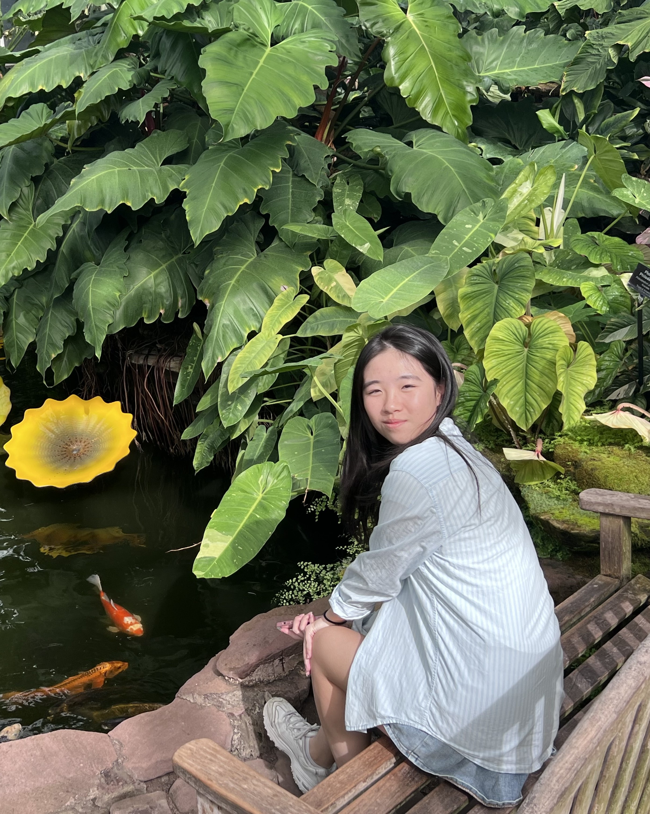
SERENA ZHANG
Division C Entomology
My name is Serena Zhang, and I’m currently a junior in Mason High School. In Science Olympiad I do Entomology, Fossils, and Ecology. In my free time I like to read and draw.
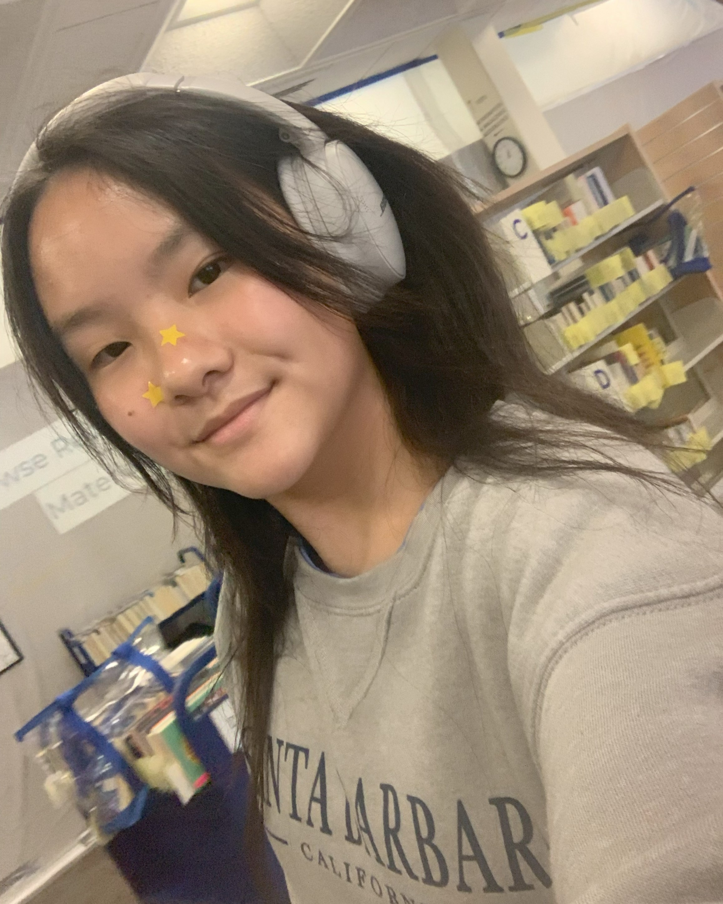
MELINDA ZHAO
Division B Entomology
Melinda is a freshman at Monta Vista High School. Her favorite events are bio and inquity events. Outside of SciOly, Melinda likes to run in cross country, play bee swarm simulator, and read campbells:)!
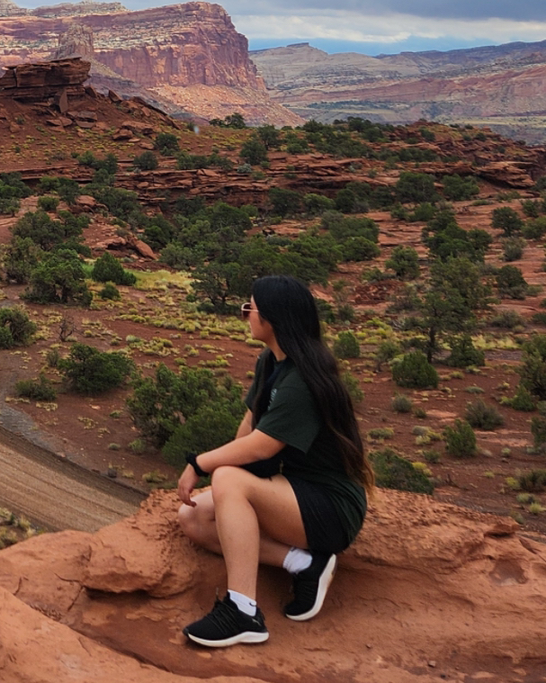
RUN ZHOU
Division B/C Taylor Trivia
Howdy! I am a current sophomore at Texas A&M studying computer science. Some of my favourite events include Ornithology, Forestry, Entomology, and, of course, Swiftology. I am a huuuuge swiftie, so if you ever wanna chat about her songs feel free to hit me up :D And, no, I don't have a favourite song, but 1989 is my fav era!
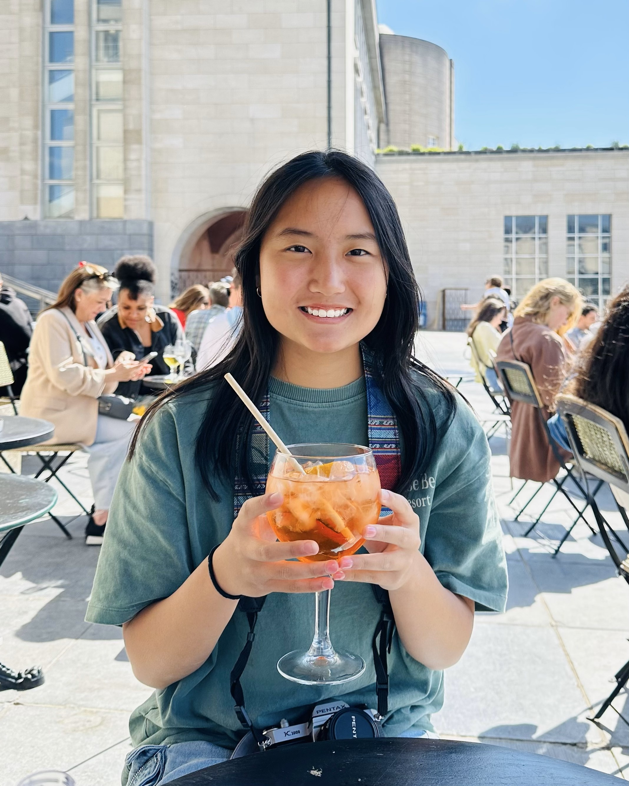
IRIS ZHU
Division C Anatomy and Physiology
Hi, I’m Iris! I’m at senior at Mason High School, and I’m super excited to be an event supervisor for this great invite. I’ve done SciOly for four years, but this is my second year of actually trying. I love to play soccer, workout at the gym, take photos with my awesome camera, watch sports, and play video games. My favorite parts of science are chemistry and biology, and I hope to pursue a career in one of those fields.
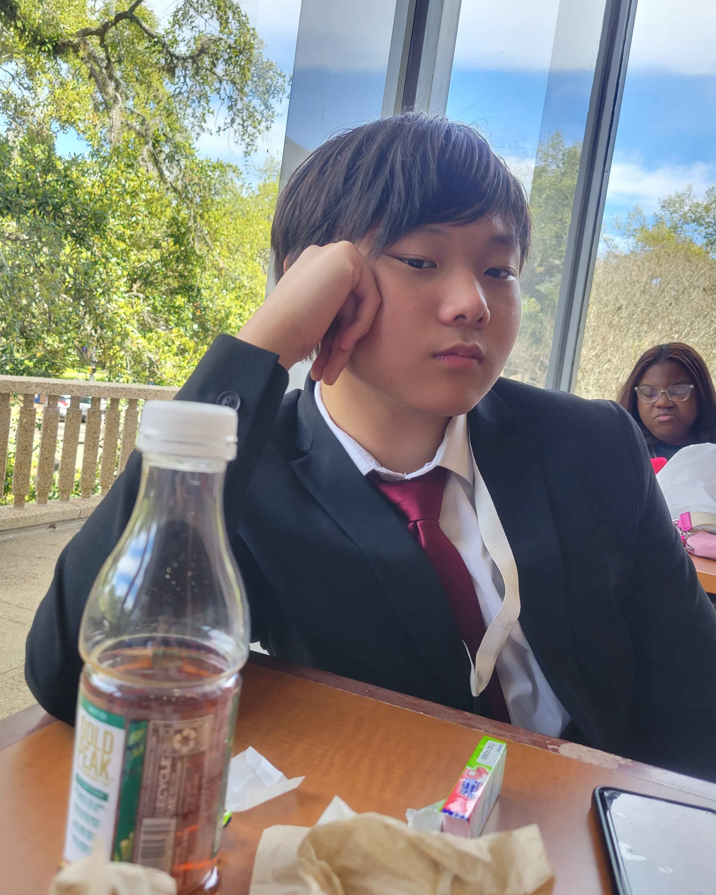
ZIANG ZHUANG
Division B Dynamic Planet
Hi! I'm a freshman at Baton Rouge Magnet High School. Dynamic Planet has always been one of my top events. This will be my fourth year competing in it, and I am glad to be able to supervise it.